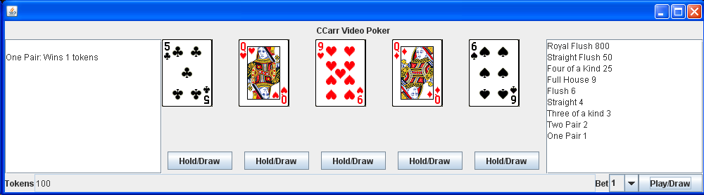
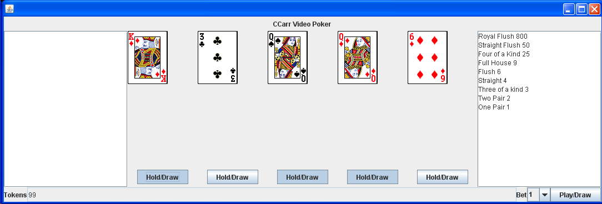
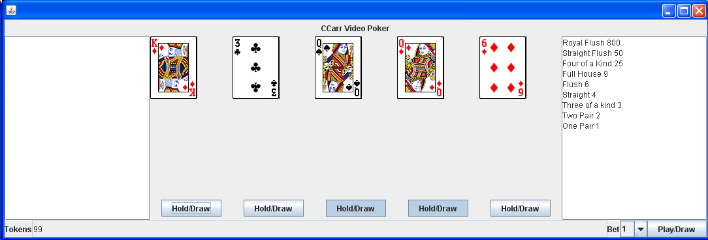
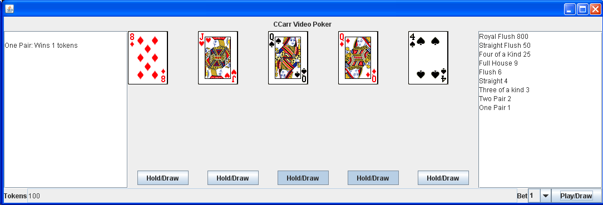
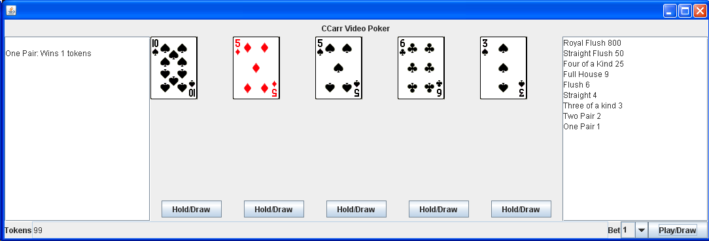
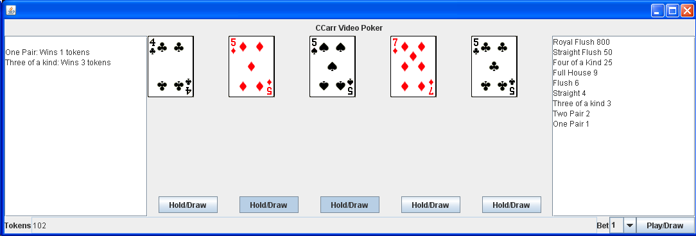
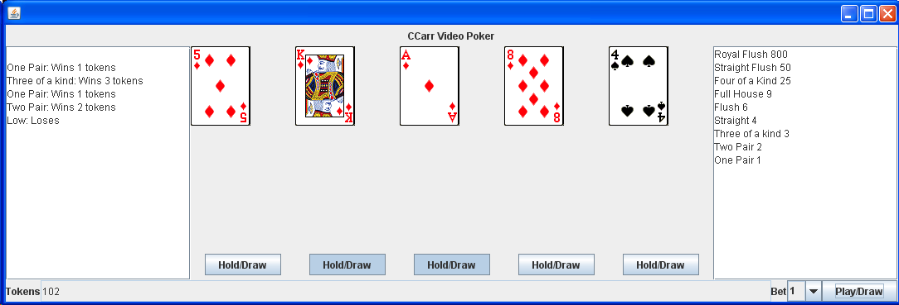
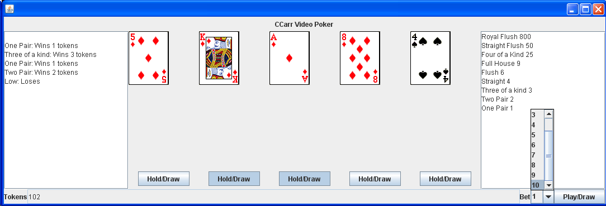
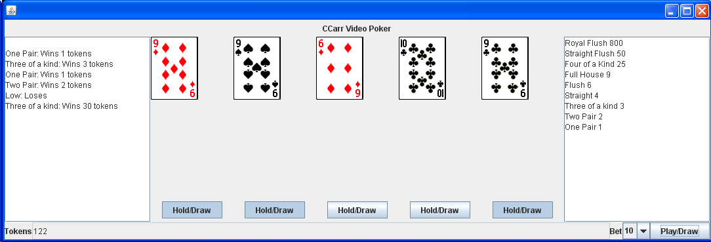
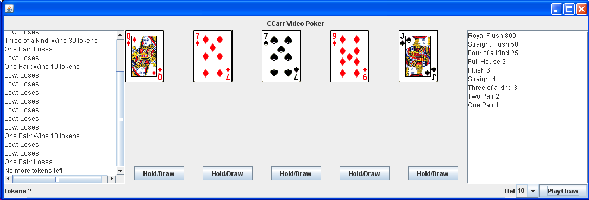

Jar file: CCarrVideoPoker.jar
Java Doc: doc/index
Java Source: videopokersrc.zip
|

Overview |
|

Holding cards |
|

Unholding cards |
|

Winning |
|

Drawing new hand |
|

Winning again - Win/Lose log |
|

Losing |
|

Changing bet |
|

Winning on larger bet |
|

Running out of tokens |